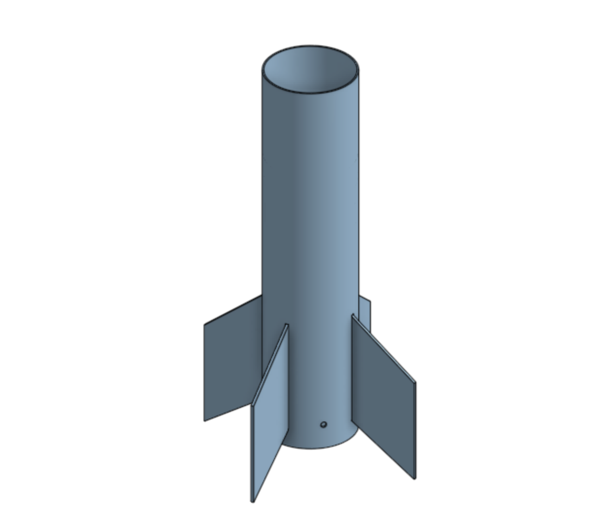
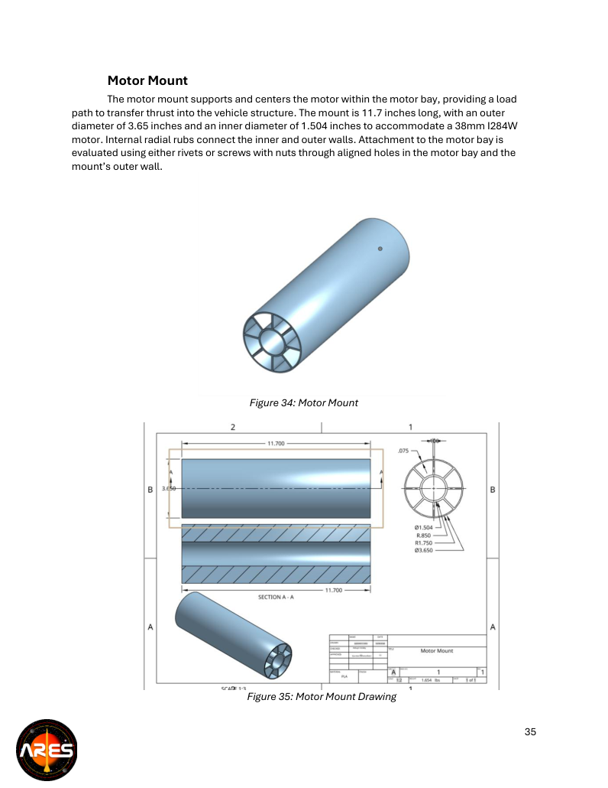
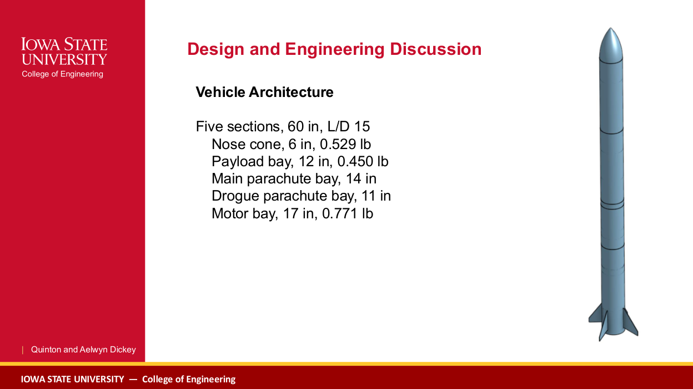
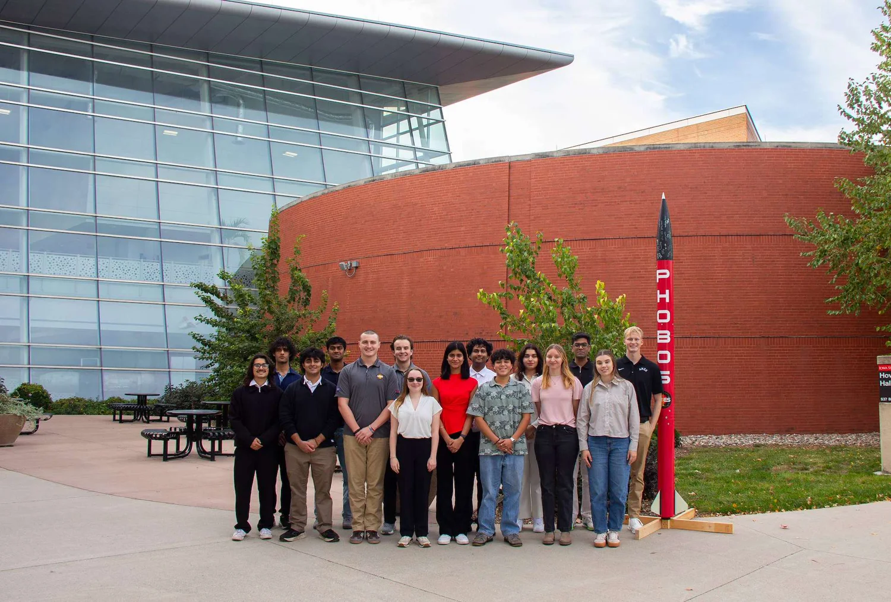

ARES motor bay
Motor bay design and integration for the Operation Shelley rocket.

My contributions
I designed the motor bay assembly in Onshape, including the bay, motor mount, fins, attachment features, and parts to control movement between components.
I coordinated the bay, mount, and fin interfaces and engineering drawings with the propulsion manufacturing engineer.
I also maintained the vehicle mass budget using CAD estimates and component data, and applied ANSYS to rocket components to evaluate their response under applied loads.
Motor bay CAD
Two views of the aft assembly.


Design considerations
Assembly & fit
The PDR describes a fin-slot arrangement in which the mount locks the fins in place. Bay, mount, fin, and shoulder interfaces must be considered together.
Motor support
The mount centers and supports the motor within the bay. The PDR includes an isometric rendering and dimensioned drawing of the mount.
Mass & vehicle performance
CAD estimates and component data feed the vehicle mass budget. OpenRocket supports assessment of apogee, rail-exit velocity, and stability against design requirements.
Design reviews
Full team documents, with selected previews.
These documents cover the complete team vehicle, including work by other ARES members. They capture preliminary design configurations and may differ from the CAD views shown above.

Preliminary Design Review →
Motor bay, fins, shoulder, and mount discussion on pages 32–36. Opens at the motor-mount drawing.

G2 Design Review →
Team presentation covering mission context, requirements, vehicle architecture, analysis, and project planning.
ARES team
